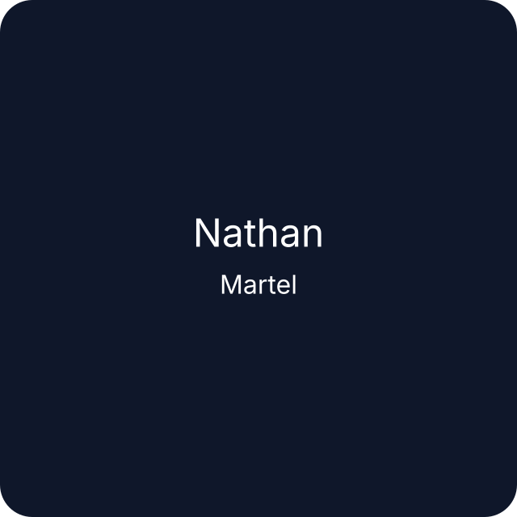

Hello, I’m
Nathan MARTEL
Middleware and automation systems engineer in the second year of engineering school at IMT Mines Alès.
Passionate about cybersecurity, CTF challenge boxes, and automation. I build secure environments, develop CTF labs, and investigate containerization security.

A professional engineer combining middleware, automation and cybersecurity.
I design reliable automation systems, harden infrastructure, and deliver practical security solutions for modern operational environments.
What I do
I work at the intersection of middleware architecture and automation with a strong focus on security. My work includes building CTF machines, securing containerized pipelines, and optimizing system reliability.
- Middleware design and integration
- Automation for deployment and maintenance
- Cybersecurity research and CTF development
- Container security and infrastructure hardening
2nd year
Engineering student at IMT Mines Alès
CTF
Challenge boxes and security labs
Containers
Secure deployment and analysis
Let’s connect and collaborate.
Reach out for projects related to cybersecurity, middleware, automation, or container security.